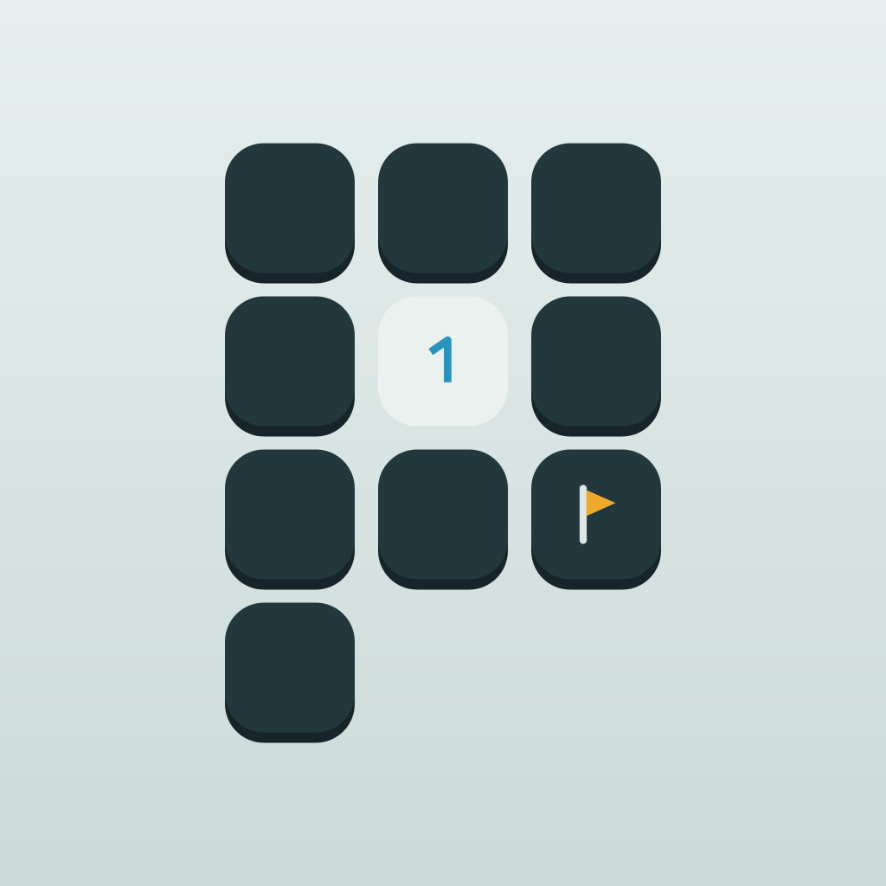

Pebblefield ← HomeHelp & FAQ
How Pebblefield works, and help with purchases and your progress.
Playing
How do I earn a gold star?
Paint a whole page from start to finish with no mine hit, no undo and no helper. Pages still on track show a hollow star on their label. Your gold stars are counted in Stats.
How does the Blitz of the Day work?
Everyone plays the same map with the same twist for five minutes. Your first run each day is the ranked one; replays are practice. During a run, the next place on the board is shown under the timer. The top 5, and everyone in the top 10%, win Glints, paid the next time you open the game. A new Blitz starts every day at midnight Singapore time (16:00 UTC). On iPhone, rankings use Game Center, so sign in to Game Center to appear on the leaderboard. On Android, you appear on the Blitz board under a calm generated name, such as Quiet Heron 42; tap New name under the board for another.
How do Pebble Dash times work?
Pebble Dash is classic Minesweeper against the clock, in four sizes from Easy to Extreme. Every board can be solved without guessing. The clock starts after your first tap and stops when the last safe tile opens; a mine ends the run. On iPhone, each size has its own Game Center board of best times, where equal times are ranked by the board's size (3BV); on Android you chase your own best times. Your first clear of each size each day earns 5 Glints.
How does the Scene of the Day work?
Every day there is a new hidden picture, the same for everyone. Start on the glowing pebble and clear the board; the picture shows through as you dig, and paints itself in full when you finish. A mine adds 20 seconds and the puzzle carries on. Finishing earns 15 Glints, 5 more with no mine, and a growing bonus for a daily streak. Missed a day? Open All days to play any day since launch. A new scene starts at midnight Singapore time.
How does the Photo Puzzle work?
Pick a photo, drag to frame it, and Pebblefield turns it into pixel art hidden under a board. Choose Quick, Detailed or Portrait for the size, and Soft or True colour. Clear the board to paint your photo; a mine adds 10 seconds. One new photo every 24 hours is free (two with the Commuter Pass), then 50 Glints each, and replays are always free. Your photos stay on your phone: they are never uploaded.
Why did part of the field lock?
Hitting a mine locks that sector. Solve 4 of the 8 sectors around it to reopen it for free, or reopen it straight away with Glints or a short ad.
Purchases and your account
How do I restore my Commuter Pass?
Open the menu (the two lines at the top right) and tap Restore purchases. It is also at the bottom of the shop. Use the same Apple ID (iPhone) or Google account (Android) you bought it with. Glints and Multiplier Savers are not restored this way: they stay with your progress (see moving to a new phone below).
How do I cancel my Commuter Pass?
On iPhone, subscriptions are managed by Apple: open the Settings app, tap your name, then Subscriptions, then Pebblefield. On Android, they are managed by Google Play: open the Play Store app, tap your profile picture, then Payments and subscriptions, then Subscriptions, then Pebblefield. Cancel at least 24 hours before the month ends to avoid the next charge. After you cancel, your pass keeps working until the end of the month you have already paid for.
What does the Commuter Pass include?
No ads: every bonus that would play an ad arrives instantly, including the last save of a multiplier past x20. You also get 10 Glints a day and the Night Train mood. The game itself is the same with or without it.
What is a Multiplier Saver?
Past x20, a mine resets your multiplier unless you save it. You get one last save with a short ad (free with the Commuter Pass); after that, a Multiplier Saver keeps it. While a save is being paid for, the game waits, so nothing can happen in between. If the purchase does not go through, the offer comes back and you are not charged. Runs kept with a Saver count in your own stats but stay off the global leaderboards.
How do I move my progress to a new phone?
On iPhone, if you are signed in to iCloud, your progress follows you: open Pebblefield on the new iPhone and choose which progress to keep when it asks. Glints and Multiplier Savers you bought always come with you, whichever you choose. On any phone, including from iPhone to Android or back, open the menu, tap Back up progress, copy the code, and paste it into Restore on the new phone. A Commuter Pass comes back with Restore purchases on the same kind of phone.
How do I change my ad privacy choices?
Where the law requires it, the menu has an Ad privacy choices button. On iPhone, you can also turn off tracking for all apps in the Settings app under Privacy & Security, then Tracking. On Android, open the Settings app, then Privacy (or Google), then Ads, to reset or delete your advertising ID.
Something else?
Email pebblefield@hotmail.com and we will get back to you.